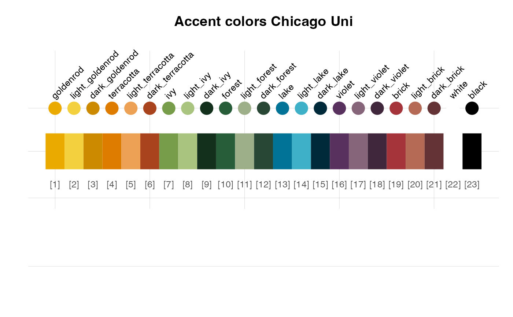

chicago_2 provides the 21 accent colors
of the University of Chicago, USA.
Source
Color definitions are based on the University of Chicago's Brand Identity Guidelines.
Details
The secondary palette is to be used sparingly and always in conjunction with the primary palette. In other words, all print and digital communications will utilize the primary palette as the dominant color scheme, with the secondary color palette providing subtle accent color options with
"goldenrod" (defined as Pantone 124C, CMYK 0/25/100/4, RGB 234/170/0, HEX #EAAA00),
"light_goldenrod" (defined as Pantone 129C, CMYK 0/12/90/0, RGB 243/208/62, HEX #F3D03E),
"dark_goldenrod" (defined as Pantone 131C, CMYK 3/36/100/11, RGB 204/138/0, HEX #CC8A00),
"terracotta" (defined as Pantone 138C, CMYK 0/46/100/6, RGB 222/124/0, HEX #DE7C00),
"light_terracotta" (defined as Pantone 157C, CMYK 0/37/74/0, RGB 236/161/84, HEX #ECA154),
"dark_terracotta" (defined as Pantone 1675C, CMYK 5/71/100/27, RGB 169/67/30, HEX #A9431E),
"ivy" (defined as Pantone 576C, CMYK 44/4/88/22, RGB 120/157/74, HEX #789D4A),
"light_ivy" (defined as Pantone 577C, CMYK 29/2/58/2, RGB 169/196/127, HEX #A9C47F),
"dark_ivy" (defined as Pantone 574C, CMYK 52/20/98/66, RGB 19/48/28, HEX #13301C),
"forest" (defined as Pantone 7483C, CMYK 82/15/85/50, RGB 39/93/56, HEX #275D38),
"light_forest" (defined as Pantone 7494C, CMYK 31/6/42/16, RGB 156/175/136, HEX #9CAF88),
"dark_forest" (defined as Pantone 553C, CMYK 72/28/65/74, RGB 40/71/52, HEX #284734),
"lake" (defined as Pantone 633C, CMYK 100/7/10/31, RGB 0/115/150, HEX #007396),
"light_lake" (defined as Pantone 631C, CMYK 70/0/15/2, RGB 62/177/200, HEX #3EB1C8),
"dark_lake" (defined as Pantone 303C, CMYK 100/55/18/76, RGB 0/42/58, HEX #002A3A),
"violet" (defined as Pantone 519C, CMYK 63/90/9/50, RGB 89/49/95, HEX #59315F),
"light_violet" (defined as Pantone 5205C, CMYK 25/42/13/43, RGB 134/100/122, HEX #86647A),
"dark_violet" (defined as Pantone 7449C, CMYK 63/96/21/83, RGB 65/39/59, HEX #41273B),
"brick*" (defined as Pantone 1807C, CMYK 6/85/71/30, RGB 164/52/58, HEX #A4343A),
"light_brick" (defined as Pantone 7522C, CMYK 10/58/54/18, RGB 180/106/85, HEX #B46A55), and
"dark_brick" (defined as Pantone 1817C, CMYK 20/70/59/60, RGB 100/51/53, HEX #643335).
See also
chicago_1 for primary colors of University of Chicago;
seecol for viewing and comparing color palettes;
usecol for using color palettes;
simcol for finding similar colors;
newpal for defining new color palettes;
grepal for finding named colors.
Other university color palettes:
CMU_1_core,
CMU_2_tartan,
CMU_3_campus,
UCLA_1,
UCLA_2,
UCLA_3,
UCSD_1_core,
UCSD_2_accent,
UCSD_3_neutral,
asu_1,
berkeley_1,
berkeley_2,
birmingham_1,
brown_1,
brown_2,
bu_1,
caltech_1,
caltech_2,
caltech_3,
carleton_1,
chicago_1,
columbia,
conc_1,
conc_2,
conc_3,
conc_4,
cornell_1,
cornell_2,
cornell_3_accent,
dartmouth_1,
duke_1,
duke_2,
dundee_background,
dundee_block,
dundee_core,
dundee_highlight,
edinburgh_1,
eth_1,
eth_2,
eth_3,
fu_pal_0,
fu_pal_1,
fu_pal_2,
fu_pal_3,
galway_1,
galway_2,
guelph,
harvard_1,
harvard_2,
harvard_3,
hu_pal_1,
hu_pal_2,
jhu_0,
jhu_1,
jhu_2,
jhu_3_accent,
jhu_4_gray,
lancaster_1,
lancaster_2,
laval,
limerick_1,
lmu_pal_1,
lmu_pal_2,
lmu_pal_3,
manchester_uni_1,
manchester_uni_accent,
manitoba_1,
manitoba_2,
mcgill_brights,
mcgill_darks,
mcgill_grey,
mcgill_muted,
mcgill_pastels,
mcgill_red,
mcmaster_brighterworld,
mcmaster_heritage,
michigan_1,
michigan_2,
minnesotatwin_2,
mit_pal,
monash_1,
monash_2,
mpg_pal,
msu_pal,
mun_1,
mun_2,
northwestern_1,
northwestern_2,
notredame_1,
nyu_1,
nyu_2,
nyu_accent,
nyu_neutral,
ottawa_1,
oxford_blog,
oxford_brand,
oxford_error,
oxford_general,
oxford_graduate,
oxford_link,
oxford_shades,
oxford_socialmedia,
pitt_1,
pitt_2,
princeton_0,
princeton_1,
princeton_2,
queens_1,
queens_2,
rpi_pal_1,
rpi_pal_2,
rpi_pal_3,
rptu_pal,
sfu_brand,
standrews_1,
standrews_2,
stanford_1,
stanford_2_accent,
stanford_3_web,
toronto_1,
trinity_1,
ubc_1,
ucalgary_accent,
ucalgary_primary,
ucalgary_secondary,
ucalgary_warmgreys,
uci_1,
uflorida_1,
umass_2,
umass_brand,
umass_neutrals,
uni_bonn_1,
uni_bonn_2,
uni_freiburg_0,
uni_freiburg_1,
uni_freiburg_2,
uni_freiburg_blue,
uni_freiburg_br,
uni_freiburg_grey,
uni_freiburg_info,
uni_goettingen_1,
uni_goettingen_2,
uni_goettingen_3,
uni_hamburg_1,
uni_hamburg_2,
uni_heidelberg_1,
uni_jena_1,
uni_jena_2,
uni_kassel,
uni_kiel_1,
uni_kiel_2,
uni_koeln_1,
uni_koeln_2,
uni_konstanz_1,
uni_konstanz_2,
uni_manchester_1,
uni_mannheim_1,
uni_mannheim_2,
uni_potsdam,
uni_regensburg_1,
uni_regensburg_2,
uni_regensburg_3,
uni_stuttgart_1,
uni_stuttgart_2_print,
uni_ulm_1,
uni_ulm_2,
upenn_1,
upenn_2,
uvic_complementary,
uvic_core,
uwaterloo_arts,
uwaterloo_engineering,
uwaterloo_environment,
uwaterloo_health,
uwaterloo_main,
uwaterloo_math,
uwaterloo_science,
vanderbilt_1,
vanderbilt_3,
waikato,
western_uni_1,
yale_1,
yeshiva,
york_1,
york_2
Examples
chicago_2
#> goldenrod light_goldenrod dark_goldenrod terracotta
#> "#EAAA00" "#F3D03E" "#CC8A00" "#DE7C00"
#> light_terracotta dark_terracotta ivy light_ivy
#> "#ECA154" "#A9431E" "#789D4A" "#A9C47F"
#> dark_ivy forest light_forest dark_forest
#> "#13301C" "#275D38" "#9CAF88" "#284734"
#> lake light_lake dark_lake violet
#> "#007396" "#3EB1C8" "#002A3A" "#59315F"
#> light_violet dark_violet brick light_brick
#> "#86647A" "#41273B" "#A4343A" "#B46A55"
#> dark_brick white black
#> "#643335" "#FFFFFF" "#000000"
unikn::seecol(chicago_2, main = "Accent colors Chicago Uni") # view color palette
